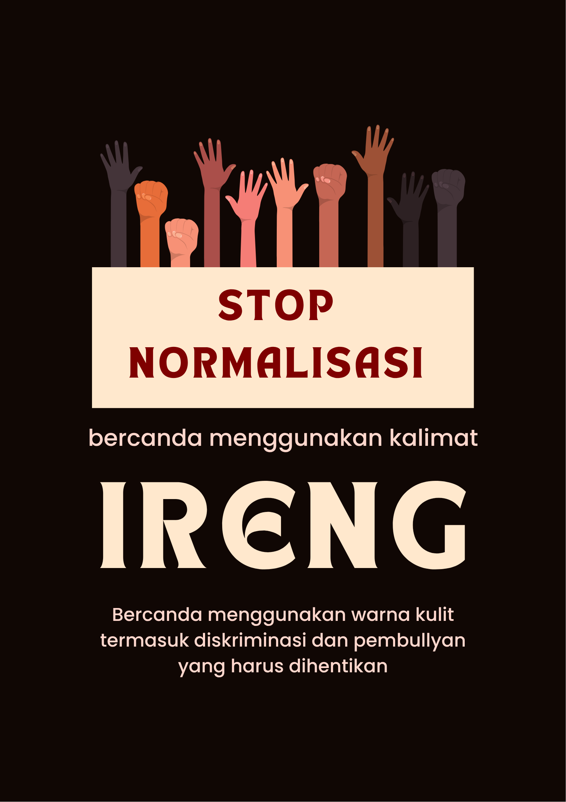

 <div class="container">
                    <div id="etika" class=" page active">
                        <div class="container">
                          <div class="content-wrapper">
                             <section class="about-content2">
                               <div class="content-wrapper">
                                 <section class="mini glass">
                                <div class="about-text glass2 center-text">
                                    <p>Sebagai mahasiswa Fakultas Ilmu Komputer <a href="https://unej.ac.id/" class="plain-link">Universitas Jember</a>, kita perlu memahami pentingnya cyber ethic atau etika dalam dunia digital agar mampu menggunakan teknologi secara bijak dan bertanggung jawab. Pembelajaran tentang etika digital membantu kita mengetahui batasan dalam berinteraksi di media sosial, seperti bagaimana bersikap sopan, menghormati privasi orang lain, serta menghindari perilaku yang merugikan seperti penyebaran hoaks, ujaran kebencian, atau cyberbullying. Sebagai calon profesional di bidang teknologi, pemahaman ini sangat penting karena kemampuan teknis harus diimbangi dengan kesadaran moral dan tanggung jawab sosial. Dengan menerapkan cyber ethic, kita turut menciptakan lingkungan digital yang aman, positif, dan saling menghargai, sekaligus menunjukkan integritas sebagai mahasiswa yang beretika dalam dunia maya.</p>
                                </div>
                                <div class="about-text glass2">
                                    <h2>Perkembangan Teknologi</h2>
                                    <e>Teknologi telah berkembang pesat sejak awal peradaban manusia. Dari alat-alat sederhana, kini manusia memasuki era digital yang ditandai dengan munculnya internet.<br>Perkembangan ini membuat:<br>Informasi bisa diakses kapan saja (24 jam).<br>Biaya komunikasi dan akses data semakin murah, bahkan gratis.<br>Orang dapat dengan mudah mencari informasi, bertransaksi, dan menjalin relasi tanpa batas tempat dan waktu.<br>Internet kini digunakan di seluruh dunia, merambah ke berbagai bidang kehidupan seperti pendidikan, bisnis, dan hiburan.</e>
                                </div>
                                <div class="about-text glass2">
                                    <h2>Dunia Maya (Cyberspace)</h2>
                                    <p>Istilah dunia maya identik dengan cyberspace, yaitu ruang digital yang diciptakan oleh sistem jaringan komputer.<br>Menurut Dysson (1994), cyberspace adalah ekosistem elektronik yang menghubungkan berbagai perangkat seperti telepon, kabel, dan gelombang elektromagnetik. Artinya, dunia maya tidak memiliki bentuk fisik yang jelas, namun eksis secara virtual.</p>
                                    <p>Perbandingan pengguna internet:<br>a. Dahulu: hanya digunakan oleh kalangan teknis atau ahli komputer.<br>b. Sekarang: digunakan oleh semua kalangan, berbagai usia dan budaya, dengan karakter pengguna yang beragam.</p>
                                </div>
                                <div class="about-text glass2">
                                    <h2>Pengguna Internet di Dunia</h2>
                                    <p>Beberapa negara dengan pengguna internet terbanyak (data 2012):<br>1. China: 538 juta pengguna (40,1% dari populasi)<br>2. Amerika Serikat: 245 juta pengguna (78,1%)<br>3. India: 137 juta pengguna (11,4%)<br>4. Jepang: 101 juta pengguna (79,5%)<br>5. 88 juta pengguna (45,6%)<br>Kini, jumlah pengguna internet global terus meningkat pesat. Berdasarkan data terbaru (2025), lebih dari 5,3 miliar orang di dunia telah terhubung ke internet.</p>
                                </div>
                                <div class="about-text glass2">
                                    <h2>Karakteristik Dunia Maya</h2>
                                    <p>Menurut Dysson (1994), dunia maya memiliki ciri-ciri berikut:</p>
                                    <p>1. Bersifat virtual : semua aktivitas terjadi secara maya, bukan fisik.<br>2. Cepat berubah : teknologi dan informasi berkembang sangat dinamis.<br>3. Tanpa batas wilayah : pengguna bisa berinteraksi lintas negara tanpa halangan geografis.<br>4. Anonim : seseorang bisa beraktivitas tanpa menampilkan identitas asli.<br>5. Bersifat publik :  informasi yang dibagikan di internet bisa diakses banyak orang.</p>
                                    <p>Dunia maya menjadi ruang sosial baru tempat manusia bekerja, belajar, dan berinteraksi secara global.</p>
                                </div>
                                <div class="about-text glass2">
                                    <h2>Netiquette (Netiket)</h2>
                                    <p>Netiquette adalah singkatan dari network etiquette, yaitu etika dalam menggunakan internet.Istilah ini pertama kali dikenalkan oleh kelompok kerja Responsible Use of the Network (RUN) dari Internet Engineering Task Force (IETF) melalui dokumen RFC 1855.</p>
                                    <p>Dalam bahasa Indonesia, Netiquette dikenal sebagai Netiket, yang berisi aturan sopan santun dan perilaku baik saat berinteraksi di dunia maya.</p>                                
                                </div>
                                <div class="about-text glass2">
                                    <h2>Tujuan Netiquette</h2>
                                    <p>1. Menjaga sikap dan perilaku agar tetap sopan saat berkomunikasi secara online.<br>2. Menghindari kesalahpahaman atau konflik di dunia maya.<br>3. Membantu menciptakan lingkungan internet yang aman, saling menghormati, dan bermanfaat.</p>                             
                                </div>
                                <div class="about-text glass2">
                                    <h2>Aturan Netiket</h2>
                                    <p>1. Bersikap sopan dan saling membangun : Hindari komentar yang menyerang, provokatif, atau menjatuhkan orang lain.<br>2. Gunakan etika yang sama seperti di dunia nyata.* Internet bukan tempat untuk bersikap kasar, menghina, atau terburu-buru menilai sesuatu.<br>3. Gunakan etika yang sama seperti di dunia nyata : Internet bukan tempat untuk bersikap kasar, menghina, atau terburu-buru menilai sesuatu.<br>4. Pahami perbedaan: Pengguna internet berasal dari berbagai negara, budaya, dan pandangan, sehingga toleransi sangat penting.<br>5. Berpikir sebelum mengetik : Jangan langsung menanggapi sesuatu tanpa memahami konteks agar tidak terjadi kesalahpahaman (flaming).<br>6. Hormati ruang diskusi : Kirim pesan atau posting hanya di grup atau forum yang sesuai agar tidak mengganggu topik pembahasan.</p>                             
                                </div>
                                <div class="about-text glass2">
                                    <h2>Pentingnya Etika di Dunia Maya</h2>
                                    <p>Etika digital penting karena pengguna internet berasal dari berbagai latar belakang budaya dan bahasa, sehingga mudah terjadi kesalahpahaman jika tidak berhati-hati dalam berkomunikasi. Selain itu, sifat anonim di dunia maya membuat sebagian orang merasa bebas untuk bertindak tidak sopan tanpa tanggung jawab. Fasilitas internet juga dapat disalahgunakan, seperti untuk menyebarkan hoaks atau melakukan cyberbullying, yang dapat merugikan orang lain. Dengan semakin banyaknya pengguna internet, terutama mereka yang masih baru dan belum memahami etika online, penerapan etika digital menjadi sangat penting agar dunia maya tetap aman, nyaman, dan saling menghargai.</p>                             
                                </div>
                                <div class="about-text glass2">
                                    <h2>Freedom of Expression (Kebebasan Berekspresi)</h2>
                                    <p>Kebebasan berpendapat adalah hak dasar setiap orang, termasuk di internet. Namun, kebebasan ini bukan berarti bebas tanpa batas.Di Amerika Serikat, hak ini dijamin oleh Amandemen Pertama Konstitusi A.S. Kebebasan berekspresi harus tidak melanggar hak orang lain, seperti menyebarkan kebohongan, fitnah, atau ujaran kebencian. Ungkapan yang dapat merugikan, menyesatkan, atau menghina orang lain bisa dianggap pelanggaran etika dan hukum.</p>
                                </div>
                                <div class="about-text glass2">
                                    <h2>Mengontrol Akses Informasi di Internet</h2>
                                    <p>Beberapa negara melakukan kontrol terhadap informasi di internet untuk alasan keamanan atau moralitas.<br>Contoh bentuk kontrol:</p>
                                    <p>Communications Decency Act (CDA) di Amerika Serikat melindungi anak-anak dari konten pornograf<br>Internet Censorship (Sensor Internet) dilakukan untuk melarang akses pada konten yang dianggap berbahaya atau bertentangan dengan kebijakan negara.</p>
                                    <p>Contoh penerapan di negara lain:<br>1. China: memblokir situs yang berisi kritik terhadap pemerintah.<br>2. Myanmar: mengontrol penyebaran informasi dengan ketat.<br>4. Cuba & Egypt: hanya sebagian kecil penduduk yang bisa mengakses internet bebas.<br>4. Amerika Serikat*: mengawasi komunikasi online dengan alasan keamanan nasional.</p>
                                </div>
                                <div class="about-text glass2 center-text">
                                <h2>Kampanye Stop Rasisme di Dunia Maya</h2>
                                <p>Kita harus menghentikan normalisasi penggunaan kata “ireng” sebagai bahan candaan, karena hal itu termasuk bentuk diskriminasi dan bullying. Kata tersebut sering digunakan untuk menyinggung warna kulit seseorang, seolah-olah menjadi gelap adalah sesuatu yang lucu atau layak dijadikan ejekan. Padahal, setiap orang memiliki warna kulit yang berbeda, dan semua sama berharganya. Mengolok-olok penampilan fisik, termasuk warna kulit, dapat melukai perasaan dan menurunkan rasa percaya diri seseorang.</p>
                                
                                <p>Sudah saatnya kita lebih bijak dalam berbicara dan memahami bahwa kata-kata memiliki kekuatan. Apa yang dianggap “sekadar bercanda” bagi sebagian orang, bisa menjadi luka yang dalam bagi orang lain. Dengan menghentikan penggunaan kata-kata yang merendahkan seperti “ireng”, kita ikut menciptakan lingkungan yang lebih menghargai keberagaman dan menjunjung kesetaraan. Mari biasakan berbicara dengan sopan dan menghormati perbedaan, karena menghargai orang lain adalah bentuk nyata dari etika dan kemanusiaan di dunia nyata maupun dunia digital.</p>
                                </div>
                        </div>
                </section>
            </div>
        </div>
    </div>